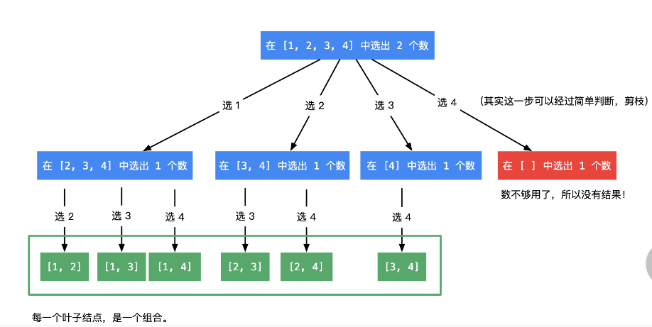

算法笔记<回溯算法>
回溯法常用范围：
- 暴力搜索
- 排列组合
- 切割、子集
- 棋盘类问题
回溯的所有状态可以构成一棵树，向右遍历（宽度）这个树靠for循环，向下遍历（深度）靠递归
1 | void backtracking(){ |
回溯三部曲：
- 确定递归函数的参数和返回值
- 确定递归的终止条件
- 确定单层搜索的逻辑
例题1 组合
返回数字1-n所能组成的所有包含k个数的组合
例如 输入4，2；返回[1,2], [1,3], [1,4], [2,3], [2,4], [3,4]
分析
此题的“树状结构”如下：根节点为(1....n)，表示此时1-n这n个数字都未使用，之后下一层节点为1-n这n个数字中拿掉一个数字后(这个数字写在根节点和下层节点的边上)，剩下的所有数字的集合。不断重复以上操作直到集合只剩下两个数字，此时树上的所有节点各为一个组合。

求所有的组合，即对该树进行dfs，直到把所有叶结点加入到结果数组中。
1.确定递归函数终止条件
终止条件往往好确定，我们发现结果集合的元素一旦有k个，就可以把这个结果加入最终的返回值，并退出
也因此，递归函数的参数里需要有一个存储结果元素的数组作为参数
2.确定递归函数的参数
对于dfs，我们需要知道如何从上一层到达下一层，在这里，“选出数”就是从上层到下层的方式。
我们发现，选数的过程是有序的，即同一层的不同结点，选的数依次递增，而下层结点选的数也一定大于上层结点的数。
所以下层结点相对于上层结点的变化为：
- 选数的空间缩小，由[1,n]变成[i+1,n] (如果上层选数为i)；
- 结果集合的元素增加，加入了上层选数i
因此，递归函数的参数有:
- 数字总数n
- 需要挑选的个数k
- 当前已挑选数字集合nums
- 剩余数字集合rest. 由于剩余集合只会在开始元素处发生变化，所以我们只用一个startIndex记录剩余集合的第一个元素即可。
3.确定单层搜索的逻辑
单层搜索，即同层从左到右的变化，我们发现已挑选数字集合不变，只有startIndex变化，只需要for循环增加startIndex，对每一层的结点进行相同的操作——加入当前元素进入已搜索集合，然后向下搜索（即递归函数）
代码如下：
1 | vector<vector<int> > res |
4.剪枝操作
剪枝，即在一些不可能完成任务的结点处提前终止。
在该任务中，已挑选元素个数为nums.size()，待挑选集合为[startIndex,n]，若nums.size()+n-startIndex+1<k,则无论如何都无法选择够k个元素，可以提前终止。
于是我们修改for循环的代码即可剪枝：
1 | vector<vector<int> > res |
例题2 排列
输出给定数组nums内元素的全排列。nums中没有重复元素。
例如，给定[1,3]，输出[[1,3],[3,1]]
1.确定递归函数终止条件
当nums中的所有元素全部添加到数组中，终止，把这个数组加入到结果集合中。
2.确定递归函数的参数
我们画出状态树，可以发现，状态树的上一层到下一层的区别仅在于nums中“待取元素”少了一个，“已经获取的元素”多了一个。如何表示这种区别呢？类似bfs和dfs时的思想，我们使用visited数组。
因此，递归函数的参数有:
- 已有的元素path（也可作为全局变量）
- 所有数字集合nums
- 标记数字已经被选中的数组visited
3.确定单层搜索的逻辑
同层从左到右，只是选择的数不同，所以同层的每一个节点我们重复下列操作：
- 加入当前元素进入已搜索集合
- 标记该元素为已搜索，然后继续向下层搜索
4.具体代码
1 | vector<vector<int> >res;//存储所有结果 |
例题3 子集(二)
给你一个整数数组 nums ，其中可能包含重复元素，请你返回该数组所有可能的子集（幂集）。
解集不能包含重复的子集。返回的解集中，子集可以按任意顺序排列。
示例1：
1 | 输入：nums = [1,2,2] |
回溯的去重
回溯去重分为“树层去重”和“树枝去重“，树枝去重即深度上的去重，在前面取过的元素后面不能再取。树层去重即宽度上的去重，同一层的不同结点取的元素不能相同。
此外，还有一个常用的“设置startIndex”，对于对顺序没有要求的题目（即1,2和2,1算相同的结果），一般都要在同层搜索时设置startIndex.
去重的逻辑判断：看“需要被去重”的结点的状态和其他节点状态之间有什么关系
1.确定递归函数终止条件
我们发现，本题需要保存的是树上的“所有节点”，而非只有叶节点，所以每调用一次backtrack函数，我们都要把当前状态保存到结果集合中。
2.确定递归函数的去重逻辑
画出状态树：以[1,2,2]为例
- 根节点 used:[]，已选:{}，可选:[1,2,2]——把根节点状态保存，即保存空集
- 第一个节点 used:[0]，已选:{1}，可选:{2,2}——保存{1}
- 第1个节点 used:[0,1]，已选:{1,2}，可选:{2}——保存{1,2}
- 第2个节点 used:[0,2]，已选:{1,2}，可选:{2}——和第1个节点重复！
- 第二个节点 used:[1]，已选:{2}，可选:{1,2}——保存{2}
- .....
- 第三个节点 used:[2]，已选:{2}，可选:{1,2}——保存{2}——和第二个节点重复！
- 第一个节点 used:[0]，已选:{1}，可选:{2,2}——保存{1}
我们可以发现，对于深度上的搜索，是可以取同一个元素多次的（只要待取集合里还有该元素），而对于同一层的搜索，取同一个元素则会出现重复。
去重方法：首先进行排序，之后同一层从左往右搜索时，如果当前搜索数(nums[i])和上一个处于同一层的节点(nums[i-1])相同，并且i不是当前循环中首个结点（仔细思考，也可以换成i>0且used[i-1]==false），则跳过该结点，继续搜索下一个节点
去重代码：
1 | //startIndex:开始的标号，n为nums的大小 |
3.具体代码
1 | class Solution { |
例题4 解数独
分析
本题我们只要搜索到一个可行解就退出，为了保存我们的解，有两种方法：
- 把回溯函数的返回值类型设为bool，只要上一层返回true，本层直接返回true【若函数还是void类型，会由于回溯而把填好的数独又改回去】
- 参数中有一个
bool& f,回溯函数开始判断f是否为true，为true就直接return
我们要遍历所有可能的解，所以需要三个for循环，一个遍历行，一个遍历列，一个遍历1-9数字，若当前结点符合数独的规则，则继续向后遍历。
代码
1 | bool backtracking(vector<vector<char>>& board) {//9*9数独 |